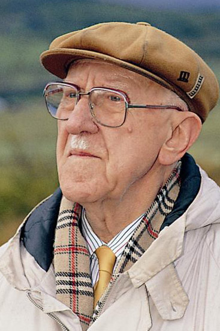

Autore: Halldor Laxness
Editore: Iperborea
Pagine:160
Genere: Narrativa - Racconti
Anno pubblicazione: 2016
«Se l'umanità si accontentasse delle esperienze soprannaturali, come una volta, non avrebbe bisogno del tabacco e dell'acquavite.»
Sette maghi, eppure otto sono i racconti che compongono questa
raccolta del Premio Nobel islandese Halldor Laxness.
Otto racconti così diversi tra di loro, anche solo per l’ambientazione geografica di ciascuno: dall’India alla Sicilia anni Venti fino alle terre estreme di Gengis Khan, oltre ovviamente all’Islanda.
Scritti in un arco temporale di circa dieci anni, tra gli anni Trenta e Quaranta, tenuti a lungo in un cassetto, poi riuniti e dati alle stampe. Soleva fare così, Laxness, con i suoi racconti: li lasciava a decantare, in un cassetto, in attesa del momento giusto.
Le atmosfere che si respirano in questi racconti richiamano l’epica e la legenda delle saghe e della tradizione islandesi (Temucin torna a casa; Napoleone Bonaparte); ma anche una certa liricità (Il pifferaio; Un’apparizione nell’abisso).
E ancora si passa per i tratti duri ma ironici di una velata denuncia politica (þorður il vecchio zoppo) o quelli più sarcastici della satira (La sconfitta dell’aviazione italiana).
La storia si intreccia alla fiaba, il reale al sovrannaturale.
Se un punto d’unione o collisione è possibile individuare tra i protagonisti di queste storie, è la loro mancanza d’aderenza al terreno della realtà.
Ognuno, in modi diversi, ha perso il contatto col reale, con ciò che è possibile o impossibile, con ciò che è davvero avvenuto rispetto a quello che s’è immaginato.
Jòn che si convince d’essere Napoleone, e nella follia trova la soluzione per non dover ammettere che i suoi sogni di grandezza, le sue ambizioni, che cova sin da bambino quando ha visto una nave enorme e sontuosa nella baia, non si realizzeranno mai; Gengis Khan che convoca i savi e i maghi d’ogni parte delle sue terre perché gli impediscano di morire concedendogli un elisir d’eternità; Zhang Qian, che abbandona tutto per cercare la terra magica sognata dall’imperatore cinese, ma, scoperta l’India, si sposa e dimentica di tornare in Patria per portare a termine il compito per cui aveva abbandonato ogni cosa; o anche Il Piccolo, un giovane garzone d’albergo che avvia una combutta con un gerarca fascista e lo mette a tappeto nella polvere, incurante di quanto stava facendo (interessante è leggere l’aspra, divertentissima satira con cui Laxness sbeffeggia e deride i fascisti: “Quelli sono nientemeno che i fascisti, gli amanti del deserto, e salta subito all’occhio la loro espressione solenne e importante, nonostante la plateale ridicolaggine dell’abbigliamento”, un racconto del ’34 eh!).
Tutti, in un modo o nell’altro, sono smarriti, da Napoleone, che sembra assumere le caratteristiche di un moderno Don Chisciotte, sino al grande Khan.
Quello dipinto da Laxness è un mondo con tanti squarci aperti nella tela del reale, da cui l’elemento sovrannaturale è pronto a fare la sua comparsa nella vita di tutti i giorni, tra i braccianti e la povera gente delle radure islandesi, e in questo aspetto ricorda la tradizione italiana di Buzzati, o quella Mitteleuropea di Perutz e Lernet-Holenia, sebbene con le dovute differenze tra il nostro Laxness e i tre.
La tradizione, la cultura islandesi sono infatti un sostrato velato ma evidente della struttura letteraria di Laxness, ne sono quasi la linfa vitale. Non a caso la motivazione del suo Nobel nel 1955, quando egli aveva appena 53 anni (giovanissimo per un Nobel), recitava: per la sua opera epica che ha rinnovato l’arte e la letteratura islandese.
Eppure bisogna ammettere che nonostante i lunghi pregi di questi racconti, ci si rende conto che sono distanti dalle somme vette raggiunte dall’arte di Laxness.
Sono lontani dalla potenza letteraria dei grandi romanzi quali Salka Valka o Gente Indipendente.
Racconti belli e piacevoli, ma bisogna tener presente che Laxness è molto di più.
 L'AUTORE - Premio Nobel nel 1955, Halldór Laxness (1902-1998) è considerato il grande maestro della narrativa islandese del Novecento. Viaggiatore infaticabile, trapiantato in America per anni, è venuto in contatto con le principali correnti culturali del nostro tempo. Le sue opere più famose sono Gente indipendente e Il concerto dei pesci, entrambe pubblicate da Iperborea, oltre a L’onore della casa, La base atomica e Sotto il ghiacciaio. La sua ultima opera pubblicata da Iperborea è Sette Maghi.
Se siete lettori appassionati visitate:
https://ilrifugiodellircocervo.wordpress.com